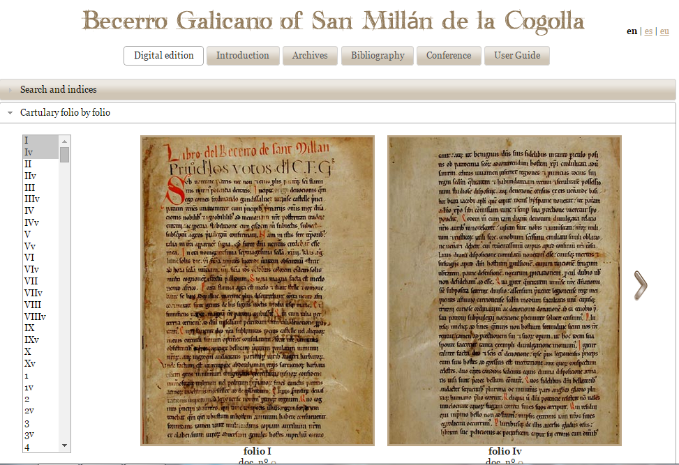
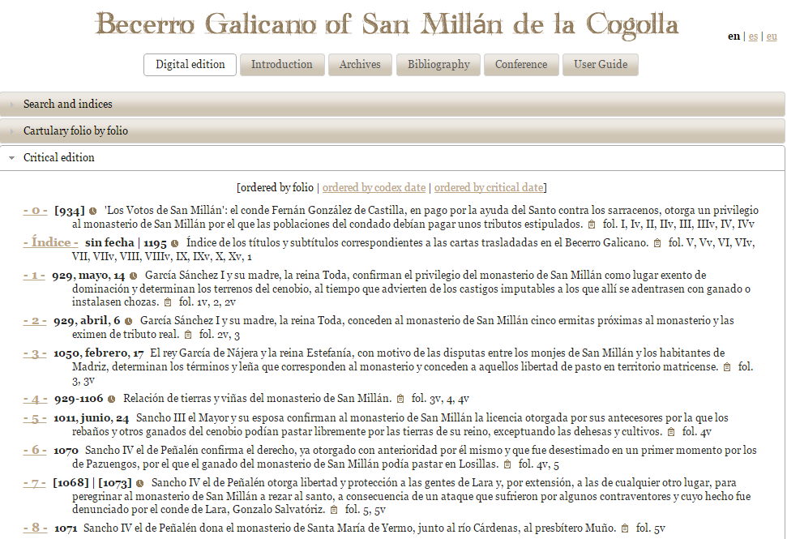
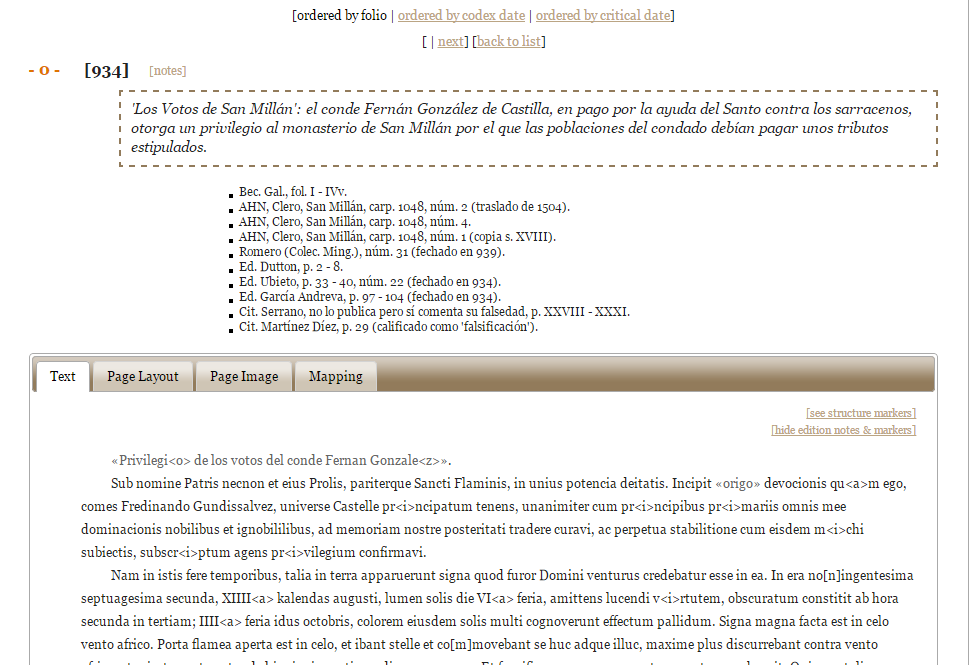
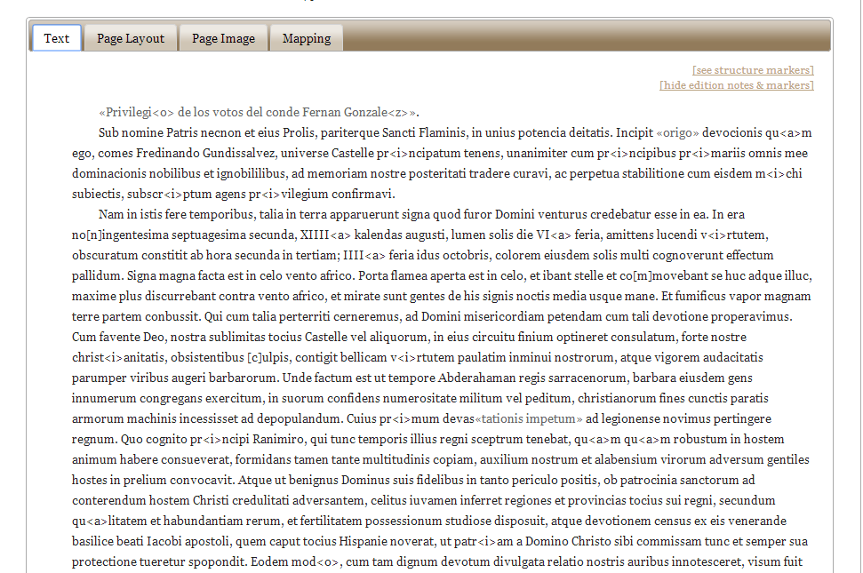
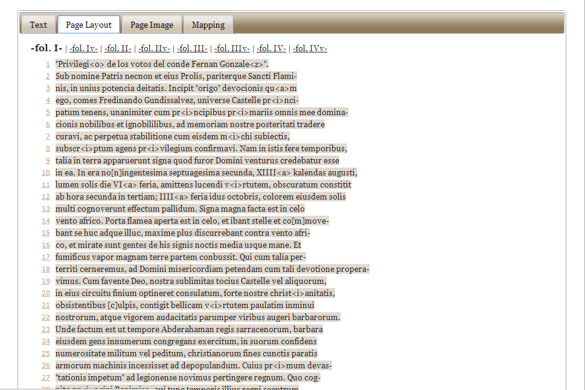
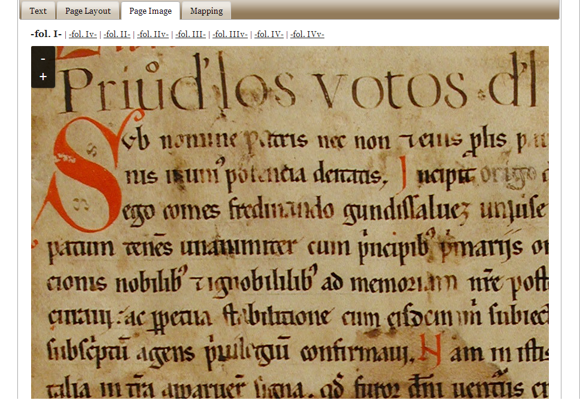
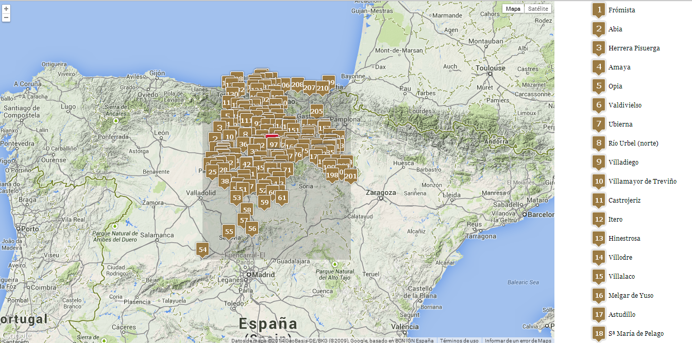
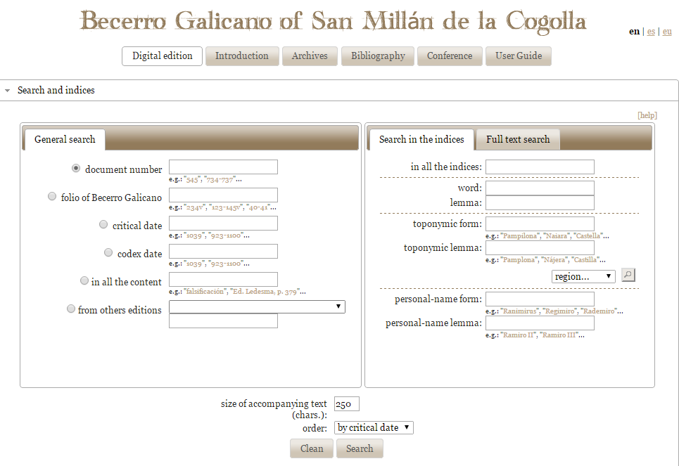

The Digital Edition of the Becerro Galicano de San Millán de la Cogolla
Table of Contents
Abstract
This is a review of the digital edition of the Becerro Galicano of San Millán de la Cogolla, one of the oldest medieval cartularies in Spain and one of the most important sources for the study of Christian Spain between the 8th and 12th century. The edition introduces new features impossible to achieve by previously printed versions, such as the possibility of reordering the documents according to different parameters or an easier manipulation of the huge number of documents thanks to a search tool capable of detecting both variants and lemmata of personal names and places. However, the use of an SQL database instead of XML/TEI encoding imposes constraints that should be removed in the future, such as the lack of expressive power towards the representation of textual structures and the lack of interoperability with other digital projects.
Introduction
The Becerro Galicano of San Millán de la Cogolla represents one of the oldest medieval cartularies in Spain. Widely used by both historians and philologists, it is one of the most important sources for the study of Christian Spain between the 11th and 12th century. The location of the monastery on the Castilian-Navarrese border and the vast scale of its estate make this cartulary an outstanding source not only for the early history of the kingdom of Pamplona and the county of Castile specifically, but also more generally for the lands and peoples of the Rioja, Navarre, Castile, Álava and Bizkaia over some four centuries. However, in spite of its remarkable juridical, historic and philological importance, previous editions have been irregular and not always satisfactory (García Andreva 11). More recently, in 2010, Fernando García Andreva revisited the Becerro and offered a new up-to-date printed edition. Simultaneously, a group of researchers were working on the digital edition reviewed here.
Between the 11th and the 12th century, hundreds of European monasteries and cathedrals made new copies of their charters granting their most valuable privileges and property deeds. However, they did not use individual sheets of parchment, which were the traditional material support for diplomatic documentation, but the prestigious format of a codex. The codex format served both as an administrative tool and as a commemoration: a way of celebrating the origins of the institution. Such compilations of diplomatic texts, the so-called cartularies, are particularly interesting objects for digital editors. It is a type of document that can especially benefit from the analytical possibilities provided by the digital medium. For instance, the mark-up of the dates, places and people in the hundreds of documents comprising a cartulary facilitates research into the history of a given institution such as a monastery.
But the possibilities of digital technology go beyond indexical mark-up. Producing a cartulary meant collecting, selecting, and rejecting documents. In fact, the selected documents were rewritten or modified as well. In some cases, the scribes simply adapted the documents to the new diplomatic conventions, or discarded any information they considered superfluous. Often the rights of the institution were subtly upgraded, which, in some occasions, lead to falsifying the originals. The way in which the documents were ordered reflects the interest and intentions of the producers. In other words, producing a cartulary consisted of a thorough process of selecting, ordering and re-writing. A digital edition of a cartulary could, in principle, enable scholars to compare the documents collected therein with the surviving original charters and hence make for a valuable tool in the field of diplomatics.
The Becerro Galicano is a monastic cartulary compiled during the last decade of the 12th century in the famous Spanish abbey of San Millán de la Cogolla, in what is today Rioja province. However, it must be noted that a cartulary is not a register of the documents issued by the monastery, but rather a copy of the documents received by that institution collected into a single volume. Traditionally, medieval cartularies have been regarded as more or less faithful copies of the content held in institutional archives, generally monastic (Peterson 285). The Becerro is in a Caroline script (hence ‘Galicano’) and contains some 750 documents ranging in date from 759 to 1194, as well as some twenty texts introduced into its final folios during the thirteenth century.1 The double dimension of the manuscript (one volume comprising hundreds of different documents) must consequently be reflected in a digital edition, since both aspects – the totality of the volume as well as the individuality of each document – may be of interest to potential researchers.
All information regarding the professional and institutional support behind the project is displayed in the website’s ‘Introduction’.2 The digital edition of the Becerro Galicano is the result of a collaborative project bringing together a team from the University of the Basque Country (UPV/EHU) and researchers from the CILENGUA (Centro Internacional de Investigación de la Lengua Española) at a total cost of approximately 60,000 Euros. The project was originated by David Peterson (UPV/EHU), who spent three years providing the edition’s general design, developing its web interface, lemmatising its text, and creating the indices and setting the dates. Occasional technical development and IT support were provided by Josu Landa Ijurko (Dijitalidadea S.L.), while Francesca Tinti (Ikerbasque-UPV/EHU) and Juan José Larrea (UPV/EHU) provided project direction.
While the edition’s transcription relies on that of Fernando García Andreva – whom the introduction credits with involvement in the development of the digital edition – the editors modified this transcription to conform to the new medium.3 In fact, it should be clarified that the digital Becerro is not a simple digitization of García Andreva’s work; the goal of the editors of the Becerro Galicano has always been the conception and creation of an independent edition. Admittedly, García Andreva’s work was uniquely suitable to the project, being the first which treated the codex as a single manuscript, previous editions having treated it as a mere collection of documents. Thus while previous editions highlighted the individual importance of each document, García Andreva was the first to explore the relevance of the volume as a whole as a subject for research (Ubieto Arteta). However, García Andreva’s work was obviously constrained by the limits of a print edition: on the one hand, the necessity of a sequential, critical editing strategy, to the exclusion of other, equally valid, strategies and on the other hand, the inaccessibility of the content due to a lack of indices and the difficulty in following its formatting and apparatus. The most significant difference, then, between the two editions is that the digital one aims to allow users to rearrange the material (either chronologically or codicologically) and thus to overcome some of the limitations of traditional print editions.
Besides these differences in aims, the digital edition also makes approximately 500 changes to García Andreva’s transcriptions, of which:
- about 40 % were orthographic errors, many of which were detected during lemmatization. (Anomalous terms appeared, meaning error detection was more complete when dealing with anomalous forms, while plausible, yet mistaken, forms were - and indeed are - harder to find.)
- about 40 % could be attributed to the inconsistent use of capital letters, generally due to confusion between common vocabulary and proper nouns. García Andreva was particularly inconsistent when distinguishing between place names and topographical descriptions (e.g. valle de Sancio in one text versus Valle de Sancio in another).
- about 10 % resulted from word separation issues, especially prepositions stuck to the next word.
- the remaining 10 % were miscellaneous issues, i.e. unnecessary white spaces, punctuation, other formatting issues, etc.
Likewise, the regestum of each document was exhaustively revised with changes in approximately half of them. Most of these were trivial: correction of orthography, homogenization and normalization of forms (especially personal names) and expansion and improvement of contextual data (particularly geographic data). However, in some ten cases the editors made significant changes to the meaning of the regestum where they thought that the text had been wrongly interpreted.
Finally, the division of the codex varies widely between the digital edition and its print predecessors: 1000 separate items in most print editions, 430 items in the García Andreva, and 700 in the digital edition. This may represent the most remarkable divergence of the digital edition from that of García Andreva. While the reasons for this are complex, they are rooted in the digital Becerro’s need for flexible access to the textual content, as opposed to García Andreva’s literal, sequential transcription of the codex.
Despite the great number and variety of changes, though, none are indicated in the edition itself, a confusing omission, given the introduction’s explicit acknowledgment of García Andreva as a source. In future, the inclusion of an editorial statement on this difference and other issues arising from editorial decisions would contribute to a better understanding of the differences and synergies between the two projects. At present, the edition only provides a personal contact, in this case, David Peterson for further information on the digital edition.
Subject and content of the edition



 


Furthermore, the website offers the possibility of a more specific approach of the documents by using the search tools. As noted in the ‘Introduction’, with the exception of a few late additions, the language of the cartulary is Latin, but it is an evolved Latin which is much less conditioned by scribal practices than in other Western European regions. The supposedly Latin text is, thus, profoundly influenced by early Castilian, to which an abundance of Basque names is added to form a singularly complex linguistic mix. In response to these challenging linguistic riches, the editors added a lemmatised index to the traditional indices for vocabulary, place-names and personal-names. This index allows the user to search for a term regardless of the form or spelling it has in the cartulary.
The only drawback of the search tool is the lack of a function to combine different terms in the index search (for example a combined search of a person name and a place name). However, combined search is available in ‘full text search’ for normal vocabulary (for either lemmata or exact sequences) though not for proper names. Further, ‘full text search’ offers the possibility of varying the space between searched items, although, unlike in the index search, no wildcards are displayed in order to assist users in their queries.

As mentioned above, the transcription can be viewed codicologically, thus following the cartulary’s own sequence and logic, or chronologically. If the user opts for chronological order, the material can be ordered according to either the dates as they appear in the codex or the critical dates that have been suggested for the two hundred or so texts that lack reliable dates. Furthermore, these three ways of ordering the cartulary contents – by folio, by codex date or by critical date – can be used to order the results of all searches.
Finally, the website includes a complete bibliographical list including the editions of the San Millán documentation, a short Emilianense bibliography, as well as the works cited in the indices and notes. This bibliography seems to counterbalance the lack of an independent study, although it is fair to keep in mind that, after the recent publication of García Andrevas’s study, the digital editors might have thought that a new study was not justified, and thus decided to rely in this respect on previous work.
Technical background, publication and presentation
This edition was not developed according to the TEI guidelines. Instead, the editors created a MySQL database whose basic units are words. The database was then enriched with the help of a number of tools created for this purpose in order to mark words as place names, common vocabulary, et cetera. However, for the sake of the sustainability of the transcription, the editor is further working on the possibility of automatically generating a TEI version of the transcription and its associated critical apparatus.
The web-presentation and visualizations are created on the fly from the database with the help of Perl scripts. There is no possibility to download documents, and thus, despite its development under Copyleft and Open access principles and its publication under a Creative Commons Attribution ShareAlike 3.0 License, the possibilities of re-using these sources for different scholarly purposes are very limited.
The ‘Introduction’ recommends citing the sources from the digital edition by using the following formula: ‘Becerro Galicano Digital Doc. X] (www.ehu.es/galicano - accessed dd/mm/yyyy)’. Although this form of citing a document of the project is quite safe in terms of address-stability, it is at the same time very uncomfortable, since it only indicates the webpage of the project and leaves it to the user to find the document by themselves. However, what is expected in modern editions is a possibility to refer directly to each individual document – and not just to the domain of the project. Again, it is important to note that there is no printed version of this digital edition: despite its co-evolution with García Andreva’s edition, both are independent works.
One of the main drawbacks of this edition is the lack of complementary texts, such as a document explaining the editorial principles clearly and in-depth. While the introduction is quite clear regarding the details of the project, its stages and its participants, it is scarce regarding the editorial specifics and the technical implementation of the SDE. It would be much more efficient (and transparent) to display such information on the website, particularly everything concerning the editorial choices, since those are indeed of importance to the potential researcher.
According to the editor himself, there are still some issues to address in the long-term, such as the index of personal names, and the generation of maps for each query result, and the aforementioned goal of developing a TEI version of the edition. These future developments are currently pending and might be realized after a successful fundraising. An interesting question raised by Peterson is the possibility of using the same model implemented in the Becerro Galicano for other codices, and more importantly, doing it in an affordable way. Potential candidates for this model would be other medieval Castilian cartularies, although any prospective projects are subject to the successful fundraising.
The current edition is hosted on a server of the University of the Basque Country, but there are no explicit claims regarding the long-term sustainability and curation of the edition. In this regard, the conversion of the original database into XML/TEI files could be relevant, since it would have a direct impact on the edition’s dissemination. XML/TEI is the de facto standard for the description and encoding of texts and constitutes the basis of many digital editions. As such, the knowledge required to make use of data encoded in this way is widely available. Hence, providing the data in this way would allow scholars to reproduce the current presentation, create a new presentation or integrate the data in more encompassing projects, all of which would add to the edition’s long-term sustainability.
Conclusion
The Digital Edition of the Becerro Galicano is a solid attempt to introduce scholarly digital editions within the context of the Spanish Academia. The edition’s ability to reorder the documents according to different parameters, its search tool (capable of detecting both variants and lemmata of personal names and places), and its option to display the text in different ways, indicates a level of data modularity impossible to achieve in printed editions. However, in order to overcome MySQL’s lack of expressive power and adequacy towards the representation of textual structures and its lack of interoperability towards the community of scholarly digital editions, it will be necessary to convert the current MySQL database into XML files.
The goals of the edition are clear, straightforward and useful. It succeeds in allowing for a quicker and more efficient manipulation of the contents than any print edition could and it is, in this sense, a truly digital edition (Sahle). In this sense, the digital edition of the Becerro Galicano is a starting point for future digital diplomatic editions in Spain. It achieves commendable results even though the use of a MySQL database leads to several disadvantages in terms of re-usability, work dissemination and long-term data preservation. Given the lack of information on the manuscript itself or on the features of the search tool, the edition requires solid knowledge of the source; thus, this edition is clearly geared towards specialized scholars, who will certainly be able to profit from this publication.
For all its merits, suggestions for further improvement would include the addition of an editorial statement and downloadable XML/TEI files. A further step for the study of the documents would be to incorporate an explicit mark-up of the internal clauses, which typically structure medieval legal documents. Diplomatists would especially welcome this, as it would allow for an easier study of the legal content of the documents. Perhaps in the future, as the demand for scholarly digital editions (hopefully) grows in Spain, the editor of the Digital Edition of the Becerro Galicano will find a chance to re-visit his work and improve it with new features.4
Bibliography
- García Andreva, Fernando. El Becerro Galicano de San Millán de la Cogolla. Edición y estudio. San Millán de la Cogolla: Cilengua, 2010.
- Peterson, David. ”La arquitectura del Becerro Galicano como clave para su comprensión.” Mitificadores del pasado, falsarios de la historia. Eds. Munita Loinaz and José Antonio. Bilbao: Universidad del País Vasco, 2012.
- Sahle, Patrick. ”What is a scholarly digital edition (SDE)?” Proceedings of the NeDiMAH Expert Meeting and Workshop on Digital Scholarly Editions. The Hague 2012. Eds. Matthew Driscoll and Elena Pierazzo. Cambridge: Open Publishers, forthcoming.
- Ubieto Arteta, Antonio. Cartulario de San Millán de la Cogolla (759 – 1076), Valencia: Anubar Ediciones, 1976.
Notes
- http://web.archive.org/web/20140803090535/http://www.ehu.es/galicano/?t=intro&l=en. ↑
- http://web.archive.org/web/20140803090535/http://www.ehu.es/galicano/?t=intro&l=en. ↑
- From here on, all the information regarding the differences between both editions was provided by D. Peterson in personal correspondence. I am indebted to him for his help in answering my questions during the preparation for this review. Unfortunately, this information is not available on the website. ↑
- The research leading to these results has received funding from the People Programme (Marie Skłodowska-Curie Actions) of the European Union’s Seventh Framework Programme FP7/2007-2013/ under REA grant agreement n° 317436 (DiXiT). ↑
@article{becerro_galicano,
author = {Álvarez Carbajal, Francisco Javier},
title = {The Digital Edition of the Becerro Galicano de San Millán de la Cogolla},
journal = {RIDE – A review journal for digital editions and resources},
number = {2},
year = {2014},
doi = {10.18716/ride.a.2.3},
url = {https://doi.org/10.18716/ride.a.2.3},
}TY - JOUR
AU - Álvarez Carbajal, Francisco Javier
TI - The Digital Edition of the Becerro Galicano de San Millán de la Cogolla
T2 - RIDE – A review journal for digital editions and resources
IS - 2
PY - 2014
DA - 2014/12
DO - 10.18716/ride.a.2.3
UR - https://doi.org/10.18716/ride.a.2.3
PB - Institut für Dokumentologie und Editorik e.V.
LA - en
ER - Álvarez Carbajal, F. J. (2014). The Digital Edition of the Becerro Galicano de San Millán de la Cogolla. RIDE – A review journal for digital editions and resources, (2). https://doi.org/10.18716/ride.a.2.3Álvarez Carbajal, Francisco Javier. "The Digital Edition of the Becerro Galicano de San Millán de la Cogolla." RIDE – A review journal for digital editions and resources, no. 2, 2014. https://doi.org/10.18716/ride.a.2.3.Álvarez Carbajal, Francisco Javier. "The Digital Edition of the Becerro Galicano de San Millán de la Cogolla." RIDE – A review journal for digital editions and resources, no. 2 (2014). https://doi.org/10.18716/ride.a.2.3.